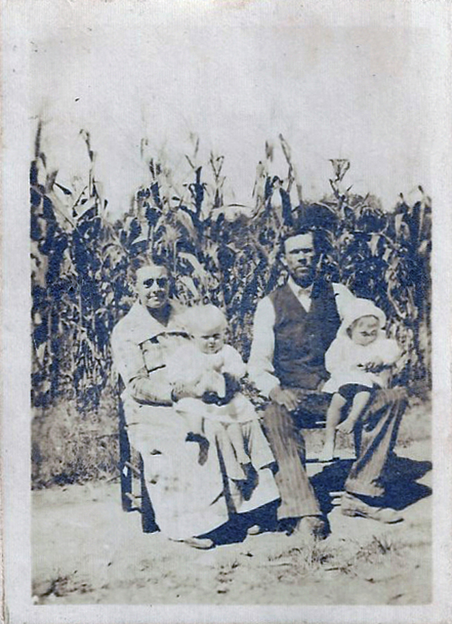

|
|
| 
John Robert Vance MOORE (1876-1933) |
John Robert Vance MOORE
Find A Grave, Memorial # 36989406 John married Mary Frances Luna SOMERS, daughter of William Paisley SOMERS and Susan Olevia Primrose KERNODLE, on 16 Aug 1903. (Mary Frances Luna SOMERS was born on 2 Feb 1880, died on 11 Aug 1958 in Alamance County, North Carolina and was buried in Stony Creek Presbyterian Church, Burlington, Alamance County, NC.) |
 Research Notes:
Research Notes: